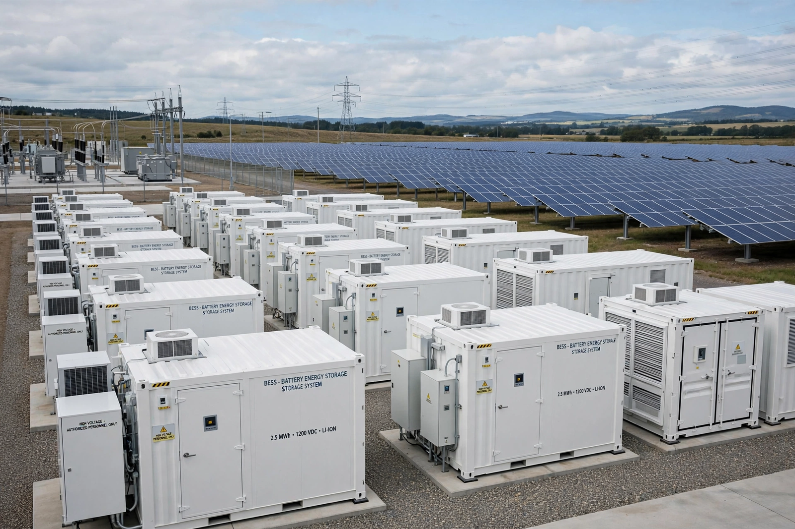

Energy storage

Energy storage is the capture of energy produced at one time for use at a later time. As electricity systems take on more variable {L('Wind_power')} and {L('Solar_power')}, storage has become central: it shifts energy from sunny, windy hours to calm evenings, stabilises frequency, and can defer grid investment.
For over a century the dominant technology has been pumped hydro; the 2010s and 2020s added a rapid build-out of lithium-ion batteries at every scale from phones to grid installations of hundreds of megawatts.
Technologies
Mechanical storage includes pumped hydro, compressed-air energy storage (in caverns), and flywheels for short bursts. Electrochemical storage spans lead-acid, flow batteries and the lithium-ion family now standard in vehicles and grids. Thermal storage (molten salt at solar plants, ice and hot water in buildings), and chemical storage as hydrogen or synthetic fuels, address longer durations.
Each technology trades off energy capacity, power, efficiency, lifetime and cost; systems are increasingly chosen by duration, from seconds (grid stability) through hours (daily solar shifting) to the still-hard problem of seasonal storage.
Role in transition
Storage does not generate energy — it buys flexibility at the price of round-trip losses — but modelling of deep-decarbonised grids consistently gives it a major role, alongside transmission, demand flexibility and dispatchable low-carbon generation. Falling battery costs have repeatedly outrun forecasts, making hybrid solar-plus-storage plants among the cheapest new electricity sources in sunny regions. See Renewable energy and Energy policy.
See also: Pumped-storage hydroelectricity · Renewable energy · Electricity · Solar power · Wind power